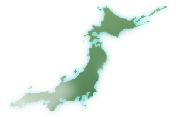

從台灣出發、全繁中、不用先讀攻略。四題，兩個該去、一個先不要去。
看程度、行程、同行的人，答案完全不同。第一次不要去八方；已在東京就 GALA；帶小孩去留壽都。
粉雪同級。要村子、夜生活、預算充足選二世谷；帶小孩、第一次北海道、想省腦選留壽都。
新幹線 75 分鐘到 GALA 湯澤，下車就是纜車。人造雪穩的輕井澤也能當天來回，還能逛 outlet。
點地區卡片展開該區雪場；要「該去哪」請用 30 秒選場。
